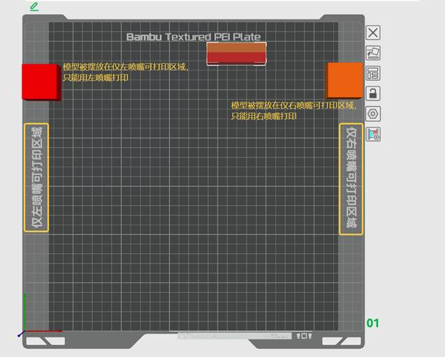
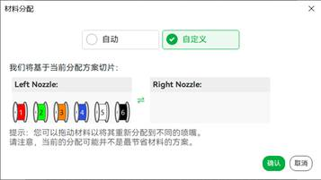
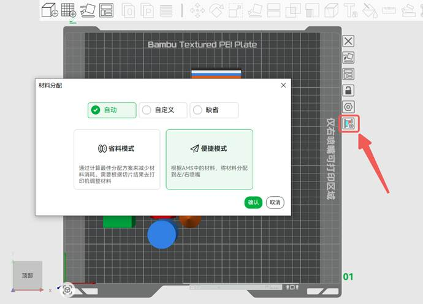
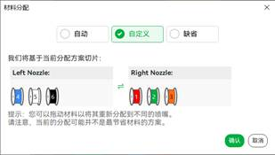
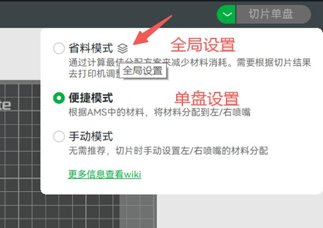
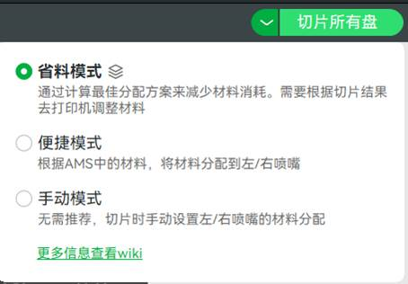
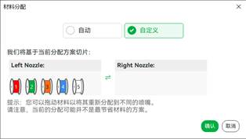
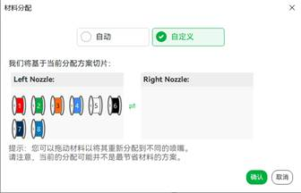

切片耗材分组
1. 背景
单喷嘴（热端）打印机在切换不同耗材进行打印时，需要对耗材进行冲刷，用一定量的新耗材去冲刷掉热端中残留的旧耗材，避免打印混色。不同耗材间的冲刷量不一样，具体的值可以在Bambu Studio的冲刷页面查看。您可以参考wiki：减少多色打印时的耗材浪费
对于像H2D这种双喷嘴（热端）的打印机来说，打印两种耗材时最优的方式就是用不同喷嘴打印不同的耗材，因为这种情况下耗材之间的切换仅仅需要切换喷嘴，而不需要用新耗材冲刷旧耗材。而打印超过两种耗材的情况，同样可以通过切换喷嘴打印来减少耗材冲刷次数。本文将介绍针对双喷嘴打印机的耗材分配策略，以实现最省料或最便捷的多耗材打印方式。
2. 多色打印顺序
单层内，不同的颜色打印顺序会导致换料次序不同，从而导致换料产生的耗材总冲刷量也有差异。切片软件会根据耗材间彼此的冲刷量，计算出一个最优的打印顺序，使得模型冲刷的损耗量最低。比如，耗材丝打印顺序 1->2->3 的总冲刷量大于 1->3->2 的总冲刷量，就会使用后者作为该层的打印顺序。如果您想要手动调整打印排序，详细内容可以参考：设置不同层耗材打印顺序
|
|
通过自动计算打印顺序得到的冲刷量 |


|
|
通过手动设置打印顺序得到的冲刷量 |


3. 耗材分组限制
由于喷嘴的物理限制，不同喷嘴有各自的可打印区域限制（H2D双喷嘴可打印范围介绍）。如下图所示，当模型内需要使用某耗材打印的部分，被放置到仅左喷嘴或仅右喷嘴可打印区域时，那么这个耗材只用对应的喷嘴打印。

除此以外，基于喷嘴的物理设计与材料的特性，每个喷嘴还有其余的可打印耗材限制，具体限制条件如下
分组限制
• TPU 材料只能放置在右喷嘴。（优先级：高）
• CF 和 GF 类材料只能放置在左喷嘴。（优先级：高）
• 零件高度超过 320 mm 时，需放置在右喷嘴。（优先级：中）
• 零件放置于左右喷嘴独占区域时，需分配至对应喷嘴。（优先级：中）
• 左右喷嘴存在相同颜色时，推荐右喷嘴。（优先级：低）
4. 省料模式（可能需要调整AMS中的耗材摆放位置）
由于不同喷嘴之间的耗材切换无需冲刷，所以整个模型的冲刷量都来自同一个喷嘴的耗材间的切换。为了最小化换料时冲刷的耗材消耗，我们应该尽可能将两者间冲刷量较大的耗材放于不同喷嘴，也就是将打印使用到的耗材按照两个喷嘴进行分组。Bambu Studio中默认采用的耗材分配策略，就是省料模式。您可以在切片按钮的悬浮窗中看到共有3种模式，选择“省料模式”并点击切片，即可获得最省耗材耗材分配方案。下文将简要介绍该分配策略的逻辑。
当连接上打印机后，我们能够得知每个喷嘴的连接的AMS数量。当无AMS连接打印机时，我们默认该喷嘴可以通过外挂料盘放置一个耗材，这样就能够在切片时计算每个喷嘴可以分配的耗材数量上限。
在满足上述限制后，切片软件会计算出一个最佳的耗材分组，保证在这种分组下，按照计算出的打印顺序，能够获得最小的冲刷量损耗。原理是尽可能让共同出现的层数较多（需要来回切换的次数更多）、换料冲刷量较大的耗材分到不同的喷嘴组中。
综上所述，省料模式的分组算法主要需要考虑以下几点，每个点的优先级按照次序降低:
1. 喷嘴的不可打印耗材限制；
2. 喷嘴可分配打印的耗材上限；
3. 最小化耗材冲刷损耗；
4. 最小化到打印机连接AMS中耗材的色彩差距；
由于该分组逻辑更倾向于减少耗材冲刷量而不是颜色最接近，故在切片后，用户需要根据“耗材摆放推荐”，检查是否把耗材丝都放入对应左右喷嘴连接的AMS中，若耗材实际摆放位置与软件推荐的不同，需要适当调整。否则有可能会在发送打印任务的窗口中无法选择为喷嘴自动分配的耗材丝。
如下动图所示，一旦切片的耗材丝被分配到了特定的喷嘴中，则在发送任务时无法强行将其更改为另一个喷嘴中的耗材，即使另一喷嘴连接的AMS中有更接近颜色的耗材也无法手动匹配。所以只能先手动调整耗材在AMS中摆放的位置，来实现最省料的打印。

5. 便捷模式（不需要调整AMS中的耗材）
不同于最省料的分组策略，便捷模式完全基于打印机中摆放的耗材进行分组规划，与模型无关。在这种策略下，会尽可能让耗材分配结果与AMS中摆放的耗材尽可能相匹配（颜色、类型等）。该选项更倾向于根据用户现有的耗材摆放方式，进行分组规划。故可能会浪费更多的耗材用于冲刷，但无需额外调整耗材的摆放顺序。适合用户不在打印机旁，远程发起多耗材打印的场景。我们建议您在使用该策略之前，先在耗材丝列表里重新同步一次AMS的耗材信息。你可以在切片按钮的悬浮窗里选择“便捷模式”，则会根据您当前AMS中实际摆放的耗材对切片耗材进行分组，然后再进行切片。切片后可以看到最优分组（最省料）方案与最便捷分组方案相比，多节省的耗材量和换料次数。

便捷模式的分组算法主要考虑以下几点，每个点的优先级按次序降低：
1. 喷嘴的不可打印耗材限制；
2. 打印耗材类型一致性限制；
3. 最小化到喷嘴连接AMS中耗材的色彩差距；
6. 手动模式
如果您对自动耗材分组策略不满意，可以在“耗材摆放推荐”中点击“耗材分组”，然后在“自定义”中手动调整左右喷嘴中的耗材，再次切片后可以看到最优分组（最省料）方式与手动设置的耗材分组相比，多节省的耗材量和换料次数。注：最省料的分组策略仅考虑节省耗材，故有时候会出现更省料但换料次数比自定义的分组更多的情况，这是正常的现象。

你也可以直接在切片按钮的悬浮窗里选择“手动模式”，则在切片前会先让你自定义给左右喷嘴分配切片的耗材，然后再进行切片。
|
|
 |


7. 盘参数与全局参数
针对不同场景，耗材的分配策略分成了不同层级的参数：盘参数与全局参数。在实际切片时，若您为某个盘设置了耗材分配策略，那么盘参数会覆盖全局参数。
在每个打印盘的右侧，点击对应图标后会有个弹窗，可以看到当前盘使用的耗材分配策略。您可以为单盘设置耗材分配策略，包含上文中提到的自动（省料模式和便捷模式）、自定义（手动模式）和缺省（跟随全局设置）。

|
 |
|
若你为某盘单独设置了耗材分配策略，则在切片单盘后，切片按钮处的浮窗与弹窗中会优先显示当前盘上的分组策略，不过会有个全局设置的图标放置在对应的模式后面，提醒用户全局切片用的是哪种耗材分组策略。若未为单盘单独设置模式，则浮窗与弹窗会优先显示全局的分组策略。

在切片所有盘时，总是显示全局的耗材分配策略，以方便为所有盘进行设置，不过为单盘设置的耗材分配方式依然生效。

在手动模式的耗材分配窗口中，切片单盘时仅显示当前盘里会用到的耗材，切片所有盘时才会显示该项目用到的所有耗材。
|
切片单盘 |
切片所有盘 |
|
 |
 |